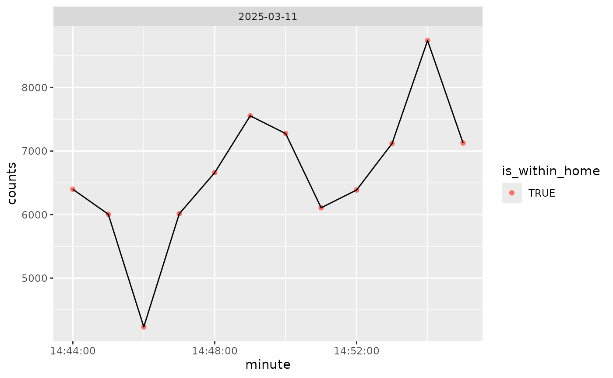
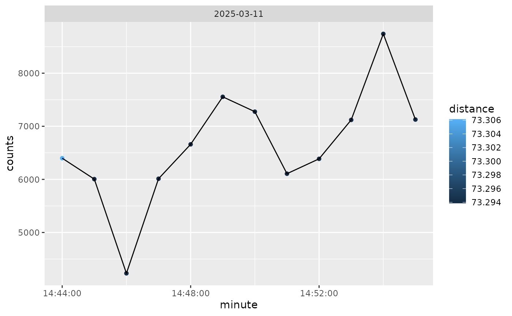

Introduction
In this vignette, we will go through the steps on how to analyze SensorLog data. We will go through the steps of reading in the data, checking for potential duplicates of timestamps, calculating distance metrics from a fixed point (commonly participant home), and creating daily summaries.
We will also integrate ActiGraph data to show activity at different distances.
Methods
Data
The data used is example data embedded in the waterways package. It
is a single participant for approximately two hours worth of GPS and
activity data. The SensorLog data is stored in a zip file and contains a
single CSV file. The data is stored in the extdata folder
of the package. We can get the path of the file on each user’s machines
using system.file and the package name:
library(waterways)
file = system.file(
"extdata", "SensorLogFiles_my_iOS_device_250311_14-55-58.zip",
package = "waterways")
file
#> [1] "/home/runner/work/_temp/Library/waterways/extdata/SensorLogFiles_my_iOS_device_250311_14-55-58.zip"This can also be done using the wrapper from
waterways:
ww_example_sensorlog_file()
#> [1] "/home/runner/work/_temp/Library/waterways/extdata/SensorLogFiles_my_iOS_device_250311_14-55-58.zip"Reading in the data
The data is read in using the ww_read_sensorlog
function:
library(dplyr)
df = ww_read_sensorlog(file, robust = FALSE)
df = df %>% select(-file) # we don't need to see which file this came from
head(df)
#> # A tibble: 6 × 13
#> time index timestamp lat lon altitude speed speed_accuracy accel_X
#> <chr> <dbl> <dbl> <dbl> <dbl> <dbl> <dbl> <dbl> <dbl>
#> 1 2025-03-11T… 1 1.74e9 39.3 -76.6 46.3 -1 -1 0.411
#> 2 2025-03-11T… 2 1.74e9 39.3 -76.6 46.3 -1 -1 0.0908
#> 3 2025-03-11T… 3 1.74e9 39.3 -76.6 46.3 -1 -1 0.125
#> 4 2025-03-11T… 4 1.74e9 39.3 -76.6 46.3 -1 -1 0.0636
#> 5 2025-03-11T… 5 1.74e9 39.3 -76.6 46.3 -1 -1 0.0993
#> 6 2025-03-11T… 6 1.74e9 39.3 -76.6 46.3 -1 -1 0.0702
#> # ℹ 4 more variables: accel_Y <dbl>, accel_Z <dbl>, lat_zero <lgl>,
#> # lon_zero <lgl>The option robust will run
rewrite_sensorlog_csv is run on the data. The
rewrite_sensorlog_csv attempts to fix any shifts with the
data, which have been seen due to a bug in the iOS app. The option
default is FALSE because this can take a much longer time
to read in the data due to reading and writing the data back out to a
temporary file. This function will also flag any values of latitude and
longitude that are 0 (absolute value
).
This flag is created because the iOS app will sometimes record 0 for
latitude and longitude when the GPS signal is lost.
We see that the data has the following columns, which are renamed from the original data.
colnames(df)
#> [1] "time" "index" "timestamp" "lat"
#> [5] "lon" "altitude" "speed" "speed_accuracy"
#> [9] "accel_X" "accel_Y" "accel_Z" "lat_zero"
#> [13] "lon_zero"The mapping from the new column names from the original column names
can be seen using ww_sensorlog_csv_colnames_mapping:
ww_sensorlog_csv_colnames_mapping()
#> time index
#> "loggingTime(txt)" "loggingSample(N)"
#> timestamp lat
#> "locationTimestamp_since1970(s)" "locationLatitude(WGS84)"
#> lon altitude
#> "locationLongitude(WGS84)" "locationAltitude(m)"
#> speed speed_accuracy
#> "locationSpeed(m/s)" "locationSpeedAccuracy(m/s)"
#> accel_X accel_Y
#> "accelerometerAccelerationX(G)" "accelerometerAccelerationY(G)"
#> accel_Z
#> "accelerometerAccelerationZ(G)"Processing the data
The data is then processed using the
ww_process_sensorlog function. This function (currently)
will:
- Check the data for duplicated data using
ww_check_data. - Calculate distance from a central point if provided using
ww_calculate_distance - Process the timing data using
ww_process_time, including checking for duplicate times. This function will also determine if the data is in the correct timezone by estimating the timezone expected (in theexpected_timezonefield, set toAmerica/New_York) based the GPS coordinates, using thelutz::tz_lookup_coordsfunction. If this check is not desired, setexpected_timezone = NULL:
ww_process_sensorlog(df)
#> No duplicate combinations found of: time, timestamp, lat, lon, altitude, speed, speed_accuracy, accel_X, accel_Y, ... and 3 other variables
#> Error in ww_check_data(data, remove_cols = remove_cols): anyDuplicated(data$time) == 0 is not TRUEAs the error indicates, there are some duplicate times in this file. We can look at those specific duplicate times and see that even to 3 digits for milliseconds, there are multiple measurements:
df %>%
add_count(time) %>%
filter(n > 1) %>%
select(time, lat, lon, starts_with("accel"))
#> # A tibble: 8 × 6
#> time lat lon accel_X accel_Y accel_Z
#> <chr> <dbl> <dbl> <dbl> <dbl> <dbl>
#> 1 2025-03-11T14:44:14.795-04:00 39.3 -76.6 -0.705 0.891 0.427
#> 2 2025-03-11T14:44:14.795-04:00 39.3 -76.6 -1.02 0.667 0.405
#> 3 2025-03-11T14:44:14.795-04:00 39.3 -76.6 -0.641 0.833 -0.0961
#> 4 2025-03-11T14:44:14.796-04:00 39.3 -76.6 -0.989 0.441 0.0263
#> 5 2025-03-11T14:44:14.796-04:00 39.3 -76.6 -0.808 0.591 -0.00647
#> 6 2025-03-11T14:44:14.796-04:00 39.3 -76.6 -0.213 0.354 -0.0787
#> 7 2025-03-11T14:44:14.797-04:00 39.3 -76.6 -0.0179 0.432 -0.0820
#> 8 2025-03-11T14:44:14.797-04:00 39.3 -76.6 0.0611 0.418 0.0770Thus, we do not want to ensure no duplicated times, so we will set
check_data to be FALSE:
df_proc = ww_process_sensorlog(df, check_data = FALSE, apply_tz = TRUE)
df_proc
#> # A tibble: 11,578 × 18
#> time index timestamp lat lon altitude speed
#> <dttm> <dbl> <dttm> <dbl> <dbl> <dbl> <dbl>
#> 1 2025-03-11 18:44:11 1 2025-03-11 18:44:07 39.3 -76.6 46.3 -1
#> 2 2025-03-11 18:44:11 2 2025-03-11 18:44:07 39.3 -76.6 46.3 -1
#> 3 2025-03-11 18:44:11 3 2025-03-11 18:44:07 39.3 -76.6 46.3 -1
#> 4 2025-03-11 18:44:12 4 2025-03-11 18:44:07 39.3 -76.6 46.3 -1
#> 5 2025-03-11 18:44:12 5 2025-03-11 18:44:07 39.3 -76.6 46.3 -1
#> 6 2025-03-11 18:44:12 6 2025-03-11 18:44:07 39.3 -76.6 46.3 -1
#> 7 2025-03-11 18:44:12 7 2025-03-11 18:44:07 39.3 -76.6 46.3 -1
#> 8 2025-03-11 18:44:12 8 2025-03-11 18:44:07 39.3 -76.6 46.3 -1
#> 9 2025-03-11 18:44:12 9 2025-03-11 18:44:07 39.3 -76.6 46.3 -1
#> 10 2025-03-11 18:44:12 10 2025-03-11 18:44:07 39.3 -76.6 46.3 -1
#> # ℹ 11,568 more rows
#> # ℹ 11 more variables: speed_accuracy <dbl>, accel_X <dbl>, accel_Y <dbl>,
#> # accel_Z <dbl>, lat_zero <lgl>, lon_zero <lgl>, distance <dbl>,
#> # is_within_home <lgl>, distance_traveled <dbl>, timezone_estimated <chr>,
#> # char_time <chr>Note, the argument apply_tz will apply the time zone of
the data. This is helpful as it will set the correct time zone of the
data in absolute terms. Unfortunately, this makes it so researchers have
to make sure they time shift things like hours. For example, if you want
to find what data is between 10AM and 6PM in EST time zone, you need to
shift those to GMT/UTC. Also, this will cause issues as it shifts data
into different dates. The data is likely/sleep rest, but this can skew
numbers. For analysis, we will not apply the timezone:
df = ww_process_sensorlog(df, check_data = FALSE, apply_tz = FALSE)
df
#> # A tibble: 11,578 × 18
#> time index timestamp lat lon altitude speed
#> <dttm> <dbl> <dttm> <dbl> <dbl> <dbl> <dbl>
#> 1 2025-03-11 14:44:11 1 2025-03-11 18:44:07 39.3 -76.6 46.3 -1
#> 2 2025-03-11 14:44:11 2 2025-03-11 18:44:07 39.3 -76.6 46.3 -1
#> 3 2025-03-11 14:44:11 3 2025-03-11 18:44:07 39.3 -76.6 46.3 -1
#> 4 2025-03-11 14:44:12 4 2025-03-11 18:44:07 39.3 -76.6 46.3 -1
#> 5 2025-03-11 14:44:12 5 2025-03-11 18:44:07 39.3 -76.6 46.3 -1
#> 6 2025-03-11 14:44:12 6 2025-03-11 18:44:07 39.3 -76.6 46.3 -1
#> 7 2025-03-11 14:44:12 7 2025-03-11 18:44:07 39.3 -76.6 46.3 -1
#> 8 2025-03-11 14:44:12 8 2025-03-11 18:44:07 39.3 -76.6 46.3 -1
#> 9 2025-03-11 14:44:12 9 2025-03-11 18:44:07 39.3 -76.6 46.3 -1
#> 10 2025-03-11 14:44:12 10 2025-03-11 18:44:07 39.3 -76.6 46.3 -1
#> # ℹ 11,568 more rows
#> # ℹ 11 more variables: speed_accuracy <dbl>, accel_X <dbl>, accel_Y <dbl>,
#> # accel_Z <dbl>, lat_zero <lgl>, lon_zero <lgl>, distance <dbl>,
#> # is_within_home <lgl>, distance_traveled <dbl>, timezone_estimated <chr>,
#> # char_time <chr>The data times will be projected into the GMT timezone
to agree with the output from ActiGraph and
read.gt3x::read.gt3x. NOTE: this shifts
times from the original timezone. For example, if the data was at
“2025-03-25 14:14:00” with a timezone of -04:00 then the
data will be in the GMT timezone, but the printed time will
be “2025-03-25 18:14:00 GMT”. You can set the timezone to the correct
timezone using lubridate::with_tz or
lubridate::force_tz (they have different behavior).
You can also pass in the tz = "EST" argument to
ww_process_sensorlog, which is passed to
ww_process_time. An additional column of
char_time is added so that the original character values fo
the time are retained so that users can check any timezone conversions,
as they can lead to issues with merging data, determining windows
(e.g. wake), or other time-based analyses.
df %>%
select(time, char_time, timestamp) %>%
head()
#> # A tibble: 6 × 3
#> time char_time timestamp
#> <dttm> <chr> <dttm>
#> 1 2025-03-11 14:44:11 2025-03-11T14:44:11.899-04:00 2025-03-11 18:44:07
#> 2 2025-03-11 14:44:11 2025-03-11T14:44:11.938-04:00 2025-03-11 18:44:07
#> 3 2025-03-11 14:44:11 2025-03-11T14:44:11.998-04:00 2025-03-11 18:44:07
#> 4 2025-03-11 14:44:12 2025-03-11T14:44:12.058-04:00 2025-03-11 18:44:07
#> 5 2025-03-11 14:44:12 2025-03-11T14:44:12.117-04:00 2025-03-11 18:44:07
#> 6 2025-03-11 14:44:12 2025-03-11T14:44:12.177-04:00 2025-03-11 18:44:07Calculating distance
We did not pass in the latitude and longitude of a fixed point to
calculate distance for the processing function, but we could have. We
can also calculate the distance separately using the function
ww_calculate_distance. First, we need to get the latitude
and longitude of the fixed point. We can use the
tidygeocoder package to get the latitude and longitude of a
fixed point. We will use the address
615 N Wolfe St, Baltimore MD for the Johns Hopkins
Bloomberg School of Public Health where this data was collected, using
the Census
Geocoder for free:
geo = tidygeocoder::geo("615 N Wolfe St, Baltimore MD", method = "census")
print(geo)
lat = geo$lat
lon = geo$long#> # A tibble: 1 × 3
#> address lat long
#> <chr> <dbl> <dbl>
#> 1 615 N Wolfe St, Baltimore MD 39.3 -76.6We can also get Census-level information using:
if (rlang::is_installed("censusxy")) {
df_census = data.frame(street = "615 N Wolfe St",
city = "Baltimore", state = "MD",
zip = "21205") %>%
censusxy::cxy_geocode(
street = "street",
city = "city",
state = "state",
zip = "zip",
output = "full",
return = "geographies",
benchmark = "Public_AR_Current",
vintage = "Census2010_Current")
df_census
}
#> street city state zip cxy_address
#> 1 615 N Wolfe St Baltimore MD 21205 615 N Wolfe St, Baltimore, MD, 21205
#> cxy_status cxy_quality cxy_matched_address cxy_tiger_line_id
#> 1 Match Exact 615 N WOLFE ST, BALTIMORE, MD, 21205 206423761
#> cxy_tiger_side cxy_lon cxy_lat cxy_state_id cxy_county_id cxy_tract_id
#> 1 R -76.59075 39.29762 24 510 60400
#> cxy_block_id
#> 1 2002From this, we can construct a 12-digits FIPS code or
GEOID10 which is the census tract required for geocoding
the EPA walkability index:
if (rlang::is_installed("arcgislayers") && rlang::is_installed("censusxy")) {
df_census = df_census %>%
mutate(GEOID10 = ww_fips12(cxy_state_id, cxy_county_id, cxy_tract_id, cxy_block_id))
epa_walkability = ww_epa_walkability(geoid = df_census$GEOID10)
print(epa_walkability)
}
#> Registered S3 method overwritten by 'jsonify':
#> method from
#> print.json jsonlite
#> Simple feature collection with 1 feature and 183 fields
#> Geometry type: POLYGON
#> Dimension: XY
#> Bounding box: xmin: -8526057 ymin: 4763540 xmax: -8525672 ymax: 4764542
#> Projected CRS: WGS 84 / Pseudo-Mercator
#> GEOID10 GEOID20 STATEFP COUNTYFP TRACTCE BLKGRPCE CSA
#> 1 245100604002 245100604002 24 510 060400 2 548
#> CSA_Name CBSA
#> 1 Washington-Baltimore-Arlington, DC-MD-VA-WV-PA 12580
#> CBSA_Name CBSA_POP CBSA_EMP CBSA_WRK Ac_Total Ac_Water
#> 1 Baltimore-Columbia-Towson, MD 2793250 1316328 1277911 46.28628 0
#> Ac_Land Ac_Unpr TotPop CountHU HH P_WrkAge AutoOwn0 Pct_AO0 AutoOwn1
#> 1 46.28628 45.67526 850 601 513 0.769 207 0.4035088 160
#> Pct_AO1 AutoOwn2p Pct_AO2p Workers R_LowWageWk R_MedWageWk R_HiWageWk
#> 1 0.3118908 146 0.2846004 356 73 106 177
#> R_PCTLOWWAGE TotEmp E5_Ret E5_Off E5_Ind E5_Svc E5_Ent E8_Ret E8_off E8_Ind
#> 1 0.2050562 2159 5 58 0 2055 41 5 58 0
#> E8_Svc E8_Ent E8_Ed E8_Hlth E8_Pub E_LowWageWk E_MedWageWk E_HiWageWk
#> 1 5 41 2019 31 0 165 432 1562
#> E_PctLowWage D1A D1B D1C D1C5_RET D1C5_OFF D1C5_IND D1C5_SVC
#> 1 0.07642427 13.15811 18.60964 47.26848 0.1094685 1.269834 0 44.99154
#> D1C5_ENT D1C8_RET D1C8_OFF D1C8_IND D1C8_SVC D1C8_ENT D1C8_ED D1C8_HLTH
#> 1 0.8976413 0.1094685 1.269834 0 0.1094685 0.8976413 44.20336 0.6787044
#> D1C8_PUB D1D D1_FLAG D2A_JPHH D2B_E5MIX D2B_E5MIXA D2B_E8MIX D2B_E8MIXA
#> 1 0 60.42659 0 4.208577 0.1684239 0.1450724 0.1809233 0.1558933
#> D2A_EPHHM D2C_TRPMX1 D2C_TRPMX2 D2C_TRIPEQ D2R_JOBPOP D2R_WRKEMP D2A_WRKEMP
#> 1 0.4211129 0.2334652 0.2599127 0.4008462 0.5649718 0.2831014 0.1648912
#> D2C_WREMLX D3A D3AAO D3AMM D3APO D3B D3BAO D3BMM3 D3BMM4
#> 1 0.4338273 33.5634 0 17.80826 15.75514 193.5917 0 27.65398 124.4429
#> D3BPO3 D3BPO4 D4A D4B025 D4B050 D4C D4D D4E D5AR
#> 1 13.82699 41.48098 156.91 0.1005002 0.9287976 83.67 1156.904 0.09843529 172055
#> D5AE D5BR D5BE D5CR D5CRI D5CE D5CEI
#> 1 135656 686993 455084 0.0008137066 0.8170607 0.0007229358 0.8138514
#> D5DR D5DRI D5DE D5DEI D2A_Ranked D2B_Ranked D3B_Ranked
#> 1 0.002455375 0.6867774 0.002324796 0.8559681 8 2 19
#> D4A_Ranked NatWalkInd Region Households
#> 1 20 14.66667 Baltimore-Columbia-Towson, MD Metro Area 498
#> Workers_1 Residents Drivers Vehicles White Male Lowwage Medwage Highwage
#> 1 356 874 680.24 447 307 387 73 106 177
#> W_P_Lowwage W_P_Medwage W_P_Highwage GasPrice logd1a logd1c logd3aao
#> 1 0.07642427 0.2000926 0.7234831 248 2.650287 3.876779 0
#> logd3apo d4bo25 d5dei_1 logd4d UPTpercap B_C_constant B_C_male B_C_ld1c
#> 1 2.818705 0 1 7 35 2.352128 0.121315 -0.327752
#> B_C_drvmveh B_C_ld1a B_C_ld3apo B_C_inc1 B_C_gasp B_N_constant B_N_inc2
#> 1 -0.51647 -0.016259 -0.172378 -0.656324 0.006464 3.252959 0.091073
#> B_N_inc3 B_N_white B_N_male B_N_drvmveh B_N_gasp B_N_ld1a B_N_ld1c
#> 1 0.082466 -0.038257 0.113668 -0.192584 -0.004854 -0.214509 -0.214509
#> B_N_ld3aao B_N_ld3apo B_N_d4bo25 B_N_d5dei B_N_UPTpc C_R_Households C_R_Pop
#> 1 0.079935 -0.18742 -0.513327 0.041535 -0.000446 239116 609032
#> C_R_Workers C_R_Drivers C_R_Vehicles C_R_White C_R_Male C_R_Lowwage
#> 1 249913 432662.6 219982 0.2749117 0.4696765 0.2358181
#> C_R_Medwage C_R_Highwage C_R_DrmV NonCom_VMT_Per_Worker Com_VMT_Per_Worker
#> 1 0.3586968 0.4054851 0.8894451 1.208178 6.123527
#> VMT_per_worker VMT_tot_min VMT_tot_max VMT_tot_avg GHG_per_worker Annual_GHG
#> 1 7.331705 3.427387 151.4601 23.25904 6.532549 1698.463
#> Shape_Length Shape_Area OBJECTID SLC_score geometry
#> 1 2777.492 312797.9 111077 97.36253 POLYGON ((-8526057 4764524,...
#> cat_walk_index
#> 1 (10.5,15.2]We can simply focus on the EPA walkability index, which is the
NatWalkInd column. We can also get the EPA walkability
index category breaks from the cat_walk_index:
if (rlang::is_installed("arcgislayers") && rlang::is_installed("censusxy")) {
print(epa_walkability %>%
as.data.frame() %>%
select(NatWalkInd, cat_walk_index))
}
#> NatWalkInd cat_walk_index
#> 1 14.66667 (10.5,15.2]We can then calculate the distance from this fixed point using the
ww_calculate_distance function:
df = ww_calculate_distance(df,
lat = lat,
lon = lon)This function uses the geosphere::distm function to
calculate the distance in meters from the fixed point. We can see the
new columns that were added to the data.
df %>%
select(time, char_time, lat_zero, lon_zero, distance)
#> # A tibble: 11,578 × 5
#> time char_time lat_zero lon_zero distance
#> <dttm> <chr> <lgl> <lgl> <dbl>
#> 1 2025-03-11 14:44:11 2025-03-11T14:44:11.899-04:00 FALSE FALSE 73.4
#> 2 2025-03-11 14:44:11 2025-03-11T14:44:11.938-04:00 FALSE FALSE 73.4
#> 3 2025-03-11 14:44:11 2025-03-11T14:44:11.998-04:00 FALSE FALSE 73.4
#> 4 2025-03-11 14:44:12 2025-03-11T14:44:12.058-04:00 FALSE FALSE 73.4
#> 5 2025-03-11 14:44:12 2025-03-11T14:44:12.117-04:00 FALSE FALSE 73.4
#> 6 2025-03-11 14:44:12 2025-03-11T14:44:12.177-04:00 FALSE FALSE 73.4
#> 7 2025-03-11 14:44:12 2025-03-11T14:44:12.236-04:00 FALSE FALSE 73.4
#> 8 2025-03-11 14:44:12 2025-03-11T14:44:12.296-04:00 FALSE FALSE 73.4
#> 9 2025-03-11 14:44:12 2025-03-11T14:44:12.356-04:00 FALSE FALSE 73.4
#> 10 2025-03-11 14:44:12 2025-03-11T14:44:12.415-04:00 FALSE FALSE 73.4
#> # ℹ 11,568 more rowsSummarizing the Data
Now that we have the distance for each point in time, we can
summarize the data. In many cases, we do not need the data at a
sub-second or second-level. We can summarize the data at a daily level
using the ww_summarize_sensorlog function. This function
will take the mean over a period of seconds, usually 60:
df_min = ww_minute_sensorlog(df)
head(df_min)
#> # A tibble: 6 × 16
#> time max_speed lat lon speed accel_X accel_Y accel_Z
#> <dttm> <dbl> <dbl> <dbl> <dbl> <dbl> <dbl> <dbl>
#> 1 2025-03-11 14:44:00 -1 39.3 -76.6 -1 -0.0178 0.964 0.0182
#> 2 2025-03-11 14:45:00 -1 39.3 -76.6 -1 -0.0665 1.01 0.0577
#> 3 2025-03-11 14:46:00 -1 39.3 -76.6 -1 -0.0547 1.00 0.0250
#> 4 2025-03-11 14:47:00 -1 39.3 -76.6 -1 -0.0843 1.01 0.0450
#> 5 2025-03-11 14:48:00 -1 39.3 -76.6 -1 -0.0808 1.01 0.0468
#> 6 2025-03-11 14:49:00 -1 39.3 -76.6 -1 -0.0901 1.01 0.0411
#> # ℹ 8 more variables: distance <dbl>, is_within_home <lgl>,
#> # distance_traveled <dbl>, vm <dbl>, enmo <dbl>, lat_zero <lgl>,
#> # lon_zero <lgl>, in_sensorlog <lgl>We can also summarize the data at a daily level using the
ww_summarize_sensorlog function:
df_sum = ww_summarize_sensorlog(df)
df_sum
#> # A tibble: 1 × 11
#> date n_minutes_with_distance sum_distance max_distance
#> <date> <int> <dbl> <dbl>
#> 1 2025-03-11 12 880. 73.3
#> # ℹ 7 more variables: n_minutes_with_distance_traveled <int>,
#> # sum_distance_traveled <dbl>, mean_distance_traveled <dbl>,
#> # n_distance_traveled <int>, time_within_home <int>, time_outside_home <int>,
#> # time_missing_home <int>One of the main issues with the daily level if you typically want to cross-referene GPS with activity, so we will keep the data at a minute level for now.
Reading in the GT3X data
To summarize the activity profile for different levels of proximity
to a fixed point we will read in the GT3X data. This data was captured
using an ActiGraph (Pensacola FL) GT9X device. The data is stored in the
extdata folder of the package, similar to the SensorLog
data. We get the path via ww_example_gt3x_file:
file_gt3x = ww_example_gt3x_file()
file_gt3x
#> [1] "/home/runner/work/_temp/Library/waterways/extdata/TAS1H30182789_2025-03-11.gt3x.gz"We can read in the data using the read.gt3x package, but
waterways wraps this using ww_read_gt3x.
ag_tz_applied = ww_read_gt3x(file_gt3x, verbose = FALSE, apply_tz = TRUE)
head(ag_tz_applied)
#> time X Y Z
#> 1 2025-03-11 17:45:00 -0.270 0.910 0.352
#> 2 2025-03-11 17:45:00 -0.266 0.895 0.359
#> 3 2025-03-11 17:45:00 -0.270 0.887 0.375
#> 4 2025-03-11 17:45:00 -0.281 0.875 0.391
#> 5 2025-03-11 17:45:00 -0.289 0.863 0.406
#> 6 2025-03-11 17:45:00 -0.285 0.859 0.418We can check the timezone of the data using the
lubridate::tz function:
lubridate::tz(ag_tz_applied$time)
#> [1] "GMT"The apply_tz argument in ww_read_gt3x (by
default) will find the timezone in the header of the file, and apply it
to the data. This is done using the lubridate::with_tz
function. The timezone is stored in the header of the file, which can be
seen using the header attribute:
We can confirm this via the header:
header = attributes(ag_tz_applied)$header
header
#> GT3X information
#> $ Serial Number :"TAS1H30182789"
#> $ Device Type :"Link"
#> $ Firmware :"1.7.2"
#> $ Battery Voltage :"4.17"
#> $ Sample Rate :80
#> $ Start Date : POSIXct, format: "2025-03-11 13:45:00"
#> $ Stop Date : POSIXct, format: "1-01-01"
#> $ Last Sample Time : POSIXct, format: "2025-03-11 15:43:15"
#> $ TimeZone :"-04:00:00"
#> $ Download Date : POSIXct, format: "2025-03-11 15:43:15"
#> $ Board Revision :"8"
#> $ Unexpected Resets :"0"
#> $ Acceleration Scale:256
#> $ Acceleration Min :"-8.0"
#> $ Acceleration Max :"8.0"
#> $ Sex :"Male"
#> $ Race :"White / Caucasian"
#> $ Limb :"Wrist"
#> $ Side :"Left"
#> $ Dominance :"Non-Dominant"
#> $ Subject Name :"John"
#> $ Serial Prefix :"TAS"
header$TimeZone
#> [1] "-04:00:00"The timezone is stored in the TimeZone field. So the
data is in GMT, but it is “correct” since this is the local time
projected into GMT. For example, if you measured data
in a timezone of -04:00 and read.gt3x gave you
a value of 2025-03-25 14:14:00, then the true time
in GMT would be 2025-03-25 18:14:00. Using
read.gt3x, the time incorrectly would be
2025-03-25 14:14:00 GMT, but with ww_read_gt3x
it would be 2025-03-25 18:14:00 GMT. This means that if you
want convert timezones, you will need to use
lubridate::with_tz or lubridate::force_tz.
We will not apply the timezone information similarly as the SensorLog for the same reasons we discussed above. We can read in the data without applying the timezone, giving “incorrect” data but that can be merged with SensorLog and does not shift times to different dates:
ag = ww_read_gt3x(file_gt3x, verbose = FALSE, apply_tz = FALSE)
head(ag)
#> time X Y Z
#> 1 2025-03-11 13:45:00 -0.270 0.910 0.352
#> 2 2025-03-11 13:45:00 -0.266 0.895 0.359
#> 3 2025-03-11 13:45:00 -0.270 0.887 0.375
#> 4 2025-03-11 13:45:00 -0.281 0.875 0.391
#> 5 2025-03-11 13:45:00 -0.289 0.863 0.406
#> 6 2025-03-11 13:45:00 -0.285 0.859 0.418
lubridate::tz(ag$time)
#> [1] "GMT"In ActiLife, the ActiGraph software, values of zero for all axes are
set to the last observation carried forward (LOCF). The
fill_zeroes argument will (by default) apply this. Also,
when the data is read in using read.gt3x: > DateTimes
are therefore represented as POSIXct format with the ‘GMT’ timezone
attribute, which is false; the datetime actually represents local
time.
We can calculate a number of summary measures from the acceleration.
We will calculate ActiGraph Activity Counts using the
agcounts package. We will use the epoch = 60
to calculate the counts in 60-second epochs. From these counts, we can
estimate non-wear using the Choi (Choi et al.
2011) algorithm, which we use from the
actigraph.sleepr package. The ww_process_gt3x
will perform these operations together:
counts = ww_process_gt3x(ag, verbose = FALSE)
counts %>%
head()
#> # A tibble: 6 × 6
#> time axis1 axis2 axis3 counts wear
#> <dttm> <dbl> <dbl> <dbl> <dbl> <lgl>
#> 1 2025-03-11 13:45:00 1067 1225 1235 2041 TRUE
#> 2 2025-03-11 13:46:00 1004 772 1048 1644 TRUE
#> 3 2025-03-11 13:47:00 129 11 189 229 TRUE
#> 4 2025-03-11 13:48:00 1541 1017 2129 2818 TRUE
#> 5 2025-03-11 13:49:00 676 575 619 1082 TRUE
#> 6 2025-03-11 13:50:00 72 79 68 127 TRUE
counts = counts %>% select(time, counts, wear)Overlap with SensorLog data
The SensorLog data used was a subset of the data from the ActiGraph
data and multiple recordings were done. We can see the overlap by using
the time column is used to find the overlap.
data = counts %>%
mutate(in_counts = TRUE) %>%
full_join(df_min %>%
mutate(in_sensorlog = TRUE),
by = join_by(time)) %>%
tidyr::replace_na(list(in_counts = FALSE, in_sensorlog = FALSE))
data = data %>%
filter(in_counts & in_sensorlog)
data
#> # A tibble: 12 × 19
#> time counts wear in_counts max_speed lat lon speed
#> <dttm> <dbl> <lgl> <lgl> <dbl> <dbl> <dbl> <dbl>
#> 1 2025-03-11 14:44:00 6399 TRUE TRUE -1 39.3 -76.6 -1
#> 2 2025-03-11 14:45:00 6005 TRUE TRUE -1 39.3 -76.6 -1
#> 3 2025-03-11 14:46:00 4231 TRUE TRUE -1 39.3 -76.6 -1
#> 4 2025-03-11 14:47:00 6012 TRUE TRUE -1 39.3 -76.6 -1
#> 5 2025-03-11 14:48:00 6660 TRUE TRUE -1 39.3 -76.6 -1
#> 6 2025-03-11 14:49:00 7555 TRUE TRUE -1 39.3 -76.6 -1
#> 7 2025-03-11 14:50:00 7275 TRUE TRUE -1 39.3 -76.6 -1
#> 8 2025-03-11 14:51:00 6107 TRUE TRUE -1 39.3 -76.6 -1
#> 9 2025-03-11 14:52:00 6387 TRUE TRUE -1 39.3 -76.6 -1
#> 10 2025-03-11 14:53:00 7120 TRUE TRUE -1 39.3 -76.6 -1
#> 11 2025-03-11 14:54:00 8740 TRUE TRUE -1 39.3 -76.6 -1
#> 12 2025-03-11 14:55:00 7127 TRUE TRUE -1 39.3 -76.6 -1
#> # ℹ 11 more variables: accel_X <dbl>, accel_Y <dbl>, accel_Z <dbl>,
#> # distance <dbl>, is_within_home <lgl>, distance_traveled <dbl>, vm <dbl>,
#> # enmo <dbl>, lat_zero <lgl>, lon_zero <lgl>, in_sensorlog <lgl>Here we see for this data that there is complete wear:
all(data$wear)
#> [1] TRUEHere we can look at the counts within “home”/work from those without (there are none) coupled with the variant that takes into account wear time:
data %>%
group_by(is_within_home) %>%
summarise(
sum_counts = sum(counts),
mean_counts = mean(counts),
sum_counts_wear = sum(counts[wear]),
mean_counts_wear = mean(counts[wear])
)
#> # A tibble: 1 × 5
#> is_within_home sum_counts mean_counts sum_counts_wear mean_counts_wear
#> <lgl> <dbl> <dbl> <dbl> <dbl>
#> 1 TRUE 79618 6635. 79618 6635.Getting Times
You can easily manipulate the time variables to get the date, hour,
and minute level data. Here is an example function
create_date_hour_minute. We recommend using the
hms data type for the hour and minute columns. since you
many times want to plot the data by hour/minute and facet by day:
create_date_hour_minute = function(data) {
data = data %>%
mutate(
date = lubridate::floor_date(time, "1 day"),
date = lubridate::as_date(date),
hour = lubridate::floor_date(time, "1 hour"),
hour = hms::as_hms(hour),
minute = lubridate::floor_date(time, "1 minute"),
minute = hms::as_hms(minute)
)
}Alternatively, if you group the data by participant, you can create
an observation day variable that puts data on the same
per-person time frame (time from start) versus calendar time:
create_day = function(data) {
data = data %>%
dplyr::mutate(
day = as.numeric(difftime(date, min(date), units = "days") + 1)
)
}We can plot the counts over time, colored by within home/work (all is within that):
if (rlang::is_installed("ggplot2")) {
library(ggplot2)
data %>%
create_date_hour_minute() %>%
ggplot(aes(x = minute, y = counts)) +
geom_point(aes(colour = is_within_home)) +
geom_line() +
facet_wrap( ~ date)
}
And we can also color by distance from home, so not much difference here:
if (rlang::is_installed("ggplot2")) {
library(ggplot2)
data %>%
create_date_hour_minute() %>%
ggplot(aes(x = minute, y = counts)) +
geom_point(aes(colour = distance)) +
geom_line() +
facet_wrap( ~ date)
}
Estimating Wear Time
We can estimate wear time using the wear column from the
ActiGraph data. Here we will calculate the sum of the wear at each
date:
data %>%
create_date_hour_minute() %>%
group_by(date) %>%
summarise(
n = n(),
n_wear = sum(wear),
n_nonwear = sum(!wear)
)
#> # A tibble: 1 × 4
#> date n n_wear n_nonwear
#> <date> <int> <int> <int>
#> 1 2025-03-11 12 12 0Without regard to SensorLog data, we can calculate the wear time by date. This is useful if you want to see how much data was collected on a given day:
counts %>%
create_date_hour_minute() %>%
group_by(date) %>%
summarise(
n = n(),
n_wear = sum(wear),
n_nonwear = sum(!wear)
)
#> # A tibble: 1 × 4
#> date n n_wear n_nonwear
#> <date> <int> <int> <int>
#> 1 2025-03-11 118 118 0Once this is calculated, you can exclude dates without insufficient wear time (e.g. 95% of the day or 1368 minutes, or 10 hours of wear). Different tasks require different criteria for wear time.